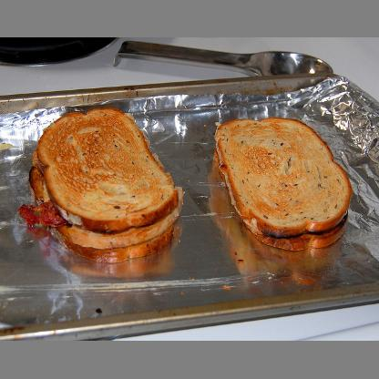
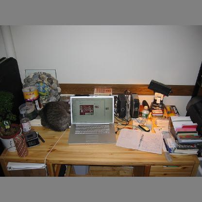
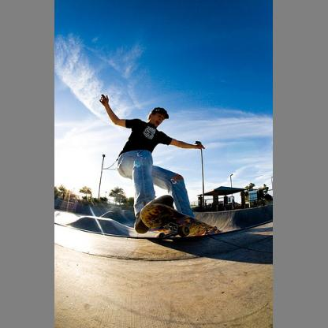
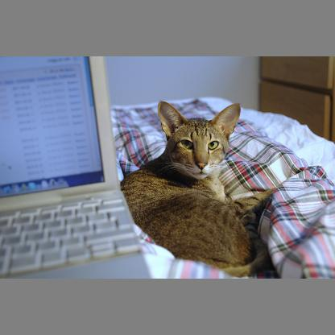
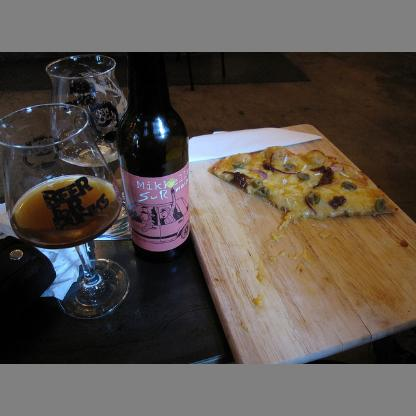

YOLO - You only look once 10647 times
An enlightening look behind the scenes of YOLOv4 state-of-the-art object detection approach and what the once actually means
Select an Image for Visualization





Changes from last version: different loss, colored (signed) gradients, p active for specific class
Classes for p are (for image 1 to 5): sandwich, laptop, person, cat, pizza
Loss:
mask1_tensor = tf.convert_to_tensor(mask1, dtype=tf.float32)
mask1_output = mask1_tensor * preds[pred_i]
loss1 = tf.reduce_sum(mask1_output/tf.math.reduce_sum(mask1_output))
losses.append(loss1)
Normalization and signed Gradients:
fixed_normalization_factor = 1000000000
fixed_normalization = np.abs(grad * fixed_normalization_factor)
fixed_normalization[fixed_normalization > 1.0] = 1.0
grad_1d = grad.mean(axis=2) * fixed_normalization_factor
grad_1d_p = grad_1d >= 0
grad_1d_n = grad_1d < 0
grad_pn = np.zeros(grad.shape, dtype=np.float)
grad_pn[grad_1d_p, 0] = np.abs(grad_1d)[grad_1d_p]
grad_pn[grad_1d_n, 2] = np.abs(grad_1d)[grad_1d_n]
Different Grid Sizes
Visualization of Static Gradients on large Grid
Visualization of Static Gradients on medium Grid
Visualization of Static Gradients on small Grid
Visualization of Signed Gradients on large Grid
Visualization of Signed Gradients on medium Grid
Visualization of Signed Gradients on small Grid